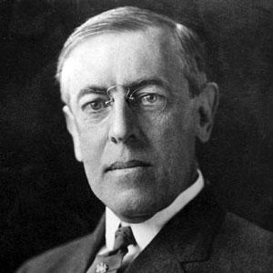

Thomas Woodrow Wilson (1856-1924)

Amerika Birleþik Devletlerinin 28. baþkanýdýr. Ýki kez seçimi kazanarak devlet baþkanlýðý yapmýþtýr. Özellikle birinci döneminde önemli deðiþiklikleri saðlayarak devletin ilerlemesinde önemli katkýsý olmuþtur. Birinci Dünya Savaþý'na, devlet baþkanlýðýna ikinci kez seçildikten (1916) bir yýl sonra girilmiþtir. Genç yaþta politikaya ilgi duymakla beraber uzun bir dönem üniversitede hocalýk yapmýþ, daha sonra Demokratlarýn safýnda aktif siyasete atýlmýþtýr. Önce vali olmuþ, akabinde devlet baþkanlýðýna seçilmiþtir. Kendisi gibi rahip olarak yetiþmesini isteyen babasýnýn isteðine uymamýþtýr. Mutaassýp bir Hýristiyan olarak bilinmektedir. Risale-i Nur'da, dinine sahip ve mutaassýp devlet ve hükümet baþkanlarýna örnek verilirken onun ismi de zikredilmektedir. (Mektubat, s. 312)Wilson, 1856 yýlýnda Virginia'nýn Staunton kasabasýnda doðdu. Kökenleri Ýskoçya ve Ýrlanda'ya kadar dayanan bir aileye mensuptur. Bir papazýn oðlu olarak dünyaya geldi ve en çok babasýnýn etkisinde kaldý. Küçük yaþtan itibaren Kilisenin müdavimi oldu. Çocukluðu, iç savaþýn hüküm sürdüðü yýllara rastladý. Bu yüzden düzenli bir eðitim hayatý olmadý. 1873 yýlýnda girdiði okuldan, saðlýðýnýn kötüleþmesi sebebiyle ayrýldý. Princeton'da bulunan üniversiteye girdi. Bu okul yaþamýnda önemli bir iz býraktý. Hem kuzey hem de güney Amerika'dan gelen öðrencilerin okuduðu bu üniversitede milli birlik duygularý güçlendi. 1879 yýlýnda mezun oldu. Öðrenciliði sýrasýnda liberal düþünce kulüplerine katýldý ve bazý yayýn faaliyetlerinde bulundu.
Wilson, öðrenciliði sýrasýnda politikaya büyük ilgi duydu. Siyaset üzerine kafa yorup fikir geliþtirmeye çalýþtý. Yazýlar yazmaya baþladý. Mezun olduðu sene yazýlarý bir dergide yayýnlandý. Her ne kadar babasý oðlunun kendisi gibi rahip olmasýný istediyse de o, politikaya duyduðu ilgiden dolayý bu yönde karar vermeye baþladý. Bu arada Virginia Hukuk Fakültesi'ne girmek suretiyle vermiþ olduðu karar doðrultusunda ilerlemeye çalýþtý. Bir ara rahatsýzlanýp eðitimine ara verdiyse de daha sonra tekrar devam etti ve 1881 yýlýnda Hukuk Fakültesinden mezun oldu.
Wilson, mezuniyetini takiben baroya kaydýný yaptýrdý ve avukatlýk yapmaya baþladý. Bir süre çalýþtýktan sonra üniversiteye baþvurdu ve John Hopkins Üniversitesi'nde çalýþmaya baþladý. Üniversitede çalýþtýðý sýrada siyaset ve iktisat üzerine kitap yazmaya baþladý. 1884 yýlýnda yayýnlanan doktora çalýþmasý büyük ilgi gördü. 1889 yýlýnda daha çok ders kitabý mahiyetinde olan "Devlet" adlý kitabýný yayýnladý. Daha sonra birkaç görev deðiþikliði yaptý ve deðiþik eðitim kurumlarýnda çalýþmaya devam etti. 1892 yýlýnda New York'a geçerek buradaki Hukuk Fakültesinde ders vermeye baþladý. Yazdýðý makaleleri zamanýn seçkin yayýn organlarýnda yayýnlandý.
Wilson, 1902 yýlýnda ciddi sýkýntýlar yaþayan Princeton Üniversitesinin yönetimine getirildi. Burada köklü deðiþiklikler yaparak birinci sýnýf bir eðitim kurumu haline getirmeye çalýþtý. Eðitim programýný yeniden düzenledi. Eðitim standardýný yüksek tutmaya çalýþtý. Yoðun çalýþmalarýndan dolayý saðlýðý ciddi þekilde bozuldu ve 1906 yýlýnda bir kalp krizi geçirdi. Yine de uzun bir aradan sonra tekrar görevinin baþýna döndü.
Politikaya olan ilgisi hiç azalmayan Wilson, 1910 yýlýndan itibaren aktif politikaya baþladý ve Demokrat Parti saflarýnda siyasete atýldý. Girdiði seçimi kazanarak New Jersey valisi oldu. Partiye girmesinden sonra baþkanlýk yolunda giderek yol almaya ve ilerlemeye baþladý. Valiliði sýrasýnda yaptýðý çalýþmalar ve yolsuzluklara karþý verdiði mücadele itibarýný önemli ölçüde artýrdý. 1912 yýlýnda da Demokratlarýn adayý olarak devlet baþkanlýðýna aday gösterildi. Seçimi kazanarak ABD'nin 28. baþkaný oldu.
Wilson, devlet baþkaný olduktan sonra, tekelleþme çemberini kýrarak küçük giriþimcilerin önünü açmaya ve bu yolla iktisadi kalkýnmayý hýzlandýrmaya çalýþtý. Zamanla birbiri içine girift hale gelmiþ politikacý-sermaye gruplarý birlikteliklerini çözerek yolsuzluklarla mücadele etti. Çalýþma koþullarýný iyileþtirmeye çalýþtý. Gümrük tarifelerini indirdi. Banka ve para sisteminde deðiþiklikler yaptý. Yaptýðý deðiþikliklerle siyasi alandaki tekelleþmeyi de ortadan kaldýrmaya çalýþtý. Daha önce vaatte bulunduðu ekonomik düzenlemelerin büyük bir kýsmýný gerçekleþtirdi.
Dýþ politikada ekonomik emperyalizme aðýrlýk veren Wilson, bazý bölgeleri iþgal etmek veya asker yerleþtirmek yoluyla kontrol altýna almaya baþladý. Birinci Dünya Savaþý baþladýktan sonra ilk baþlarda tarafsýz kalmayý tercih etti. Ayný zamanda savaþýn ülkesindeki kötü etkisini ortadan kaldýrmaya çalýþtý. Fakat yine de ticaretleri büyük bir darbe aldý. Borsalarda panik hakim oldu. Savaþýn baþýnda yönetim ve kamuoyu Ýngiltere'nin baþýný çektiði grubu desteklemekle birlikte, savaþa katýlmanýn kendileri için bir fayda saðlayacaðýna inanmýyor ve tarafsýz kalmayý tercih ediyorlardý. Diðer taraftan Kongre'de bulunan bazý Alman taraftarlarý ise silah ihracýnýn yasaklanmasýný istiyorlardý. Ancak, baþkan bu talebi kabul etmedi.
1916 yýlýnda yapýlan seçimi kazanýp tekrar baþkanlýða seçilen Wilson'un bu baþarýsýnda savaþtan uzak durmanýn önemli bir etkisi oldu. Fakat, savaþan taraflarýn birbirlerine kesin üstünlük saðlayamamalarý, bütün güçleriyle kazanmak için harekete geçmeleri tarafsýz kalmayý güçleþtirdi. ABD'nin ticaret gemilerini silahlandýrmasý, üç ticaret gemilerinin Alman denizaltýlarý tarafýndan batýrýlmasý gibi görünürdeki sebeplerden sonra 1917 yýlýnda Almanya'ya karþý savaþ ilan edildi. Savaþa girildikten sonra yardým için Avrupa'ya asker gönderildi. Bu yolla Rusya'dan boþalan ve bozulan askeri denge düzeltildi. Diðer taraftan Almanya'nýn baþýný çektiði gurubun iþi zorlaþtý. Bilindiði gibi Ýttifak devletleri bir yýl sonra yenilgiyi kabul edip savaþtan çekilmek zorunda kaldýlar.
Wilson, barýþýn temel esaslarýný içeren ve barýþ düzenini saðlamaya yönelik bazý önerilerde bulundu. 8 Ocak 1918 tarihinde Kongrede yaptýðý bir konuþmada 14 maddeden oluþan temel ilkeler sýraladý. Bu ilkeler tarihe, "Wilson Prensipleri" olarak geçti. Bu ilkelerden bir tanesi Osmanlý Devleti ile alakalý idi. Buna göre; "Osmanlý Ýmparatorluðunun Türk olan kýsýmlarýnýn egemenliði saðlanacak, fakat Türk olmayan milliyetlere muhtar geliþme imkânlarý verilecek. Çanakkale Boðazý devamlý olarak bütün milletlerin gemilerine açýk olacak ve bu, milletlerarasý garanti altýna alýnacak." (Fahir Armaoðlu, 20. Yüzyýl Siyasi Tarihi, 1. C. Ankara 1993, s. 139)
Wilson, savaþ sonrasý toplanan konferansa katýlmak üzere Paris'e gitti. Burada açýþ konuþmasý yaptý. Savaþ sonrasýnda Amerika'nýn da durumu pek iç açýcý deðildi. Ülke içinde, imzalanan barýþ antlaþmalarýný uygun bulmayanlarýn sayýsý hiç de az deðildi. Versay Antlaþmasýnýn Senatoda görüþülmesi uzun ve tartýþmalý oldu. Cumhuriyetçilerin itirazlarý etkili oldu. Baþkanýn tüm çabalarýna raðmen Senatodaki son oylamada Versay (Versailles) Antlaþmasý kabul edilmeyince, Amerika Milletler Cemiyeti'nin dýþýnda kaldý. Wilson'un yoðun çalýþma temposu saðlýðýný önemli ölçüde etkiledi. 1919 yýlýnda kýsmi felç geçirdi. 1920 yýlýnda Nobel Barýþ Ödülü kendisine verildi. Bir yýl sonra seçimi kazan Cumhuriyetçilerin adayýna devlet baþkanlýðýný devretti. Baþkanlýktan ayrýldýðý 1921 yýlýndan itibaren evinde inzivaya çekildi. 3 Þubat 1924 yýlýnda Washington'da öldü.
Risale-i Nur'da Wilson, Avrupa'nýn dinine sahip çýktýðýný örneklemek baðlamýnda geçer. Risale-i Nur, madem Avrupa dinine lakayt kalýp ilerledi, biz de ilerlemek için aynýsýný yapmalýyýz, tarzýndaki iddialarýn mesnetsizliðini göz önüne serer. Avrupa dine baðlandýkça taassuba düþtüðünü ve her þeyden önce, iddianýn tersine Avrupa'nýn dinine sahip çýktýðýný örnekleriyle verir. Bu örneklerden birkaç tane devlet ve hükümet baþkanýn ismi zikredilir. Bu arada bir papazýn oðlu olan ve dinine baðlýlýðýyla tanýnan Wilson'u da örnek gösterir. (Mektubat, s. 312-313)